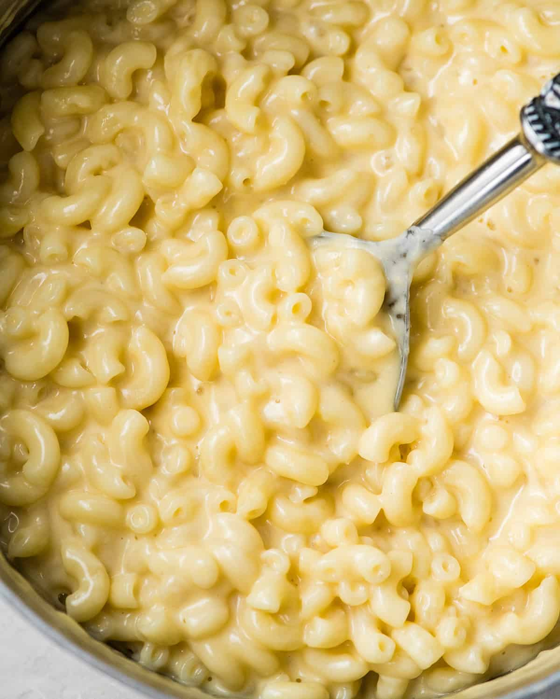

Mac and Cheese

Mac and Cheese
Mac and cheese s a rich and creamy dish consisting of macaroni pasta mixed with a cheesy sauce.
It's particularly popular in the United States.
Ingredients
- Pasta
- Double cream
- Mozzarella cheese
- Chedar cheese
Steps
- Boil the pasta
- In the pan on medium high heat mix both cheese with the cream till smooth.
- Place pasta in to the baking tray and pour cream and cheese mixture over it.
- Bake it for 15 mins.
- Finish it with more cheese on top and bake for more 5 mins.